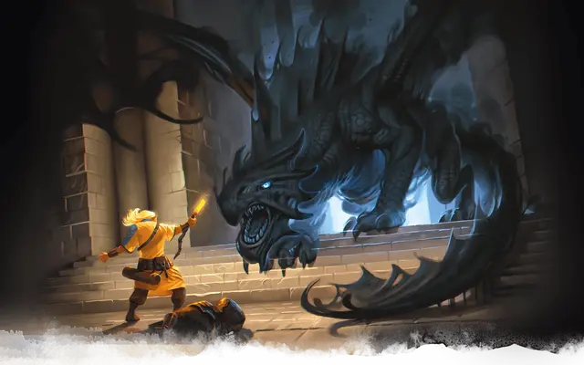

Умбраксакар
Umbraxakar
Огромный Дракон, нейтрально-злой, именной НИП

Класс Доспеха 19 (природный доспех)
Хиты 212 (17к12 + 102)
Скорость 40 футов, плавая 40 футов, летая 80 футов
| мод | спас | ||
|---|---|---|---|
| СИЛ | 25 | +7 | +7 |
| ЛОВ | 10 | +0 | +5 |
| ТЕЛ | 23 | +6 | +11 |
| мод | спас | ||
|---|---|---|---|
| ИНТ | 16 | +3 | +3 |
| МДР | 15 | +2 | +7 |
| ХАР | 19 | +4 | +9 |
Навыки Восприятие +12, Проницательность +7, Скрытность +10
Сопротивление урону некротическая энергия
Иммунитет к урону электричество
Чувства слепое зрение 60 футов, тёмное зрение 120 футов, пассивное Восприятие 22
Языки Общий, Драконий
Опасность 15 (13000 опыта)
Бонус мастерства +5
Особенности
Амфибия. Дракон может дышать и воздухом и под водой.
Легендарное сопротивление (3/день). Если дракон проваливает спасбросок, он может вместо этого сделать спасбросок успешным.
Живая тень. Находясь в области тусклого света или тьмы, дракон обладает сопротивлением ко всем видам урона кроме урона излучением, психической энергией и силовым полем.
Скрытность в тени. Находясь в области тусклого света или тьмы, дракон может совершать действие Засада бонусным действием.
Чувствительность к солнечному свету. Находясь на солнечном свету, дракон совершает с помехой броски атаки, а также проверки Мудрости (Восприятие), полагающиеся на зрение.
Действия
Мультиатака. Дракон может использовать Ужасающее присутствие. Затем он совершает три атаки: одну укусом, и две когтями.
Укус. Рукопашная атака оружием: +12 к попаданию, досягаемость 10 футов, одна цель. Попадание: Колющий урон 18 (2к10 + 7).
Коготь. Рукопашная атака оружием: +12 к попаданию, досягаемость 5 футов, одна цель. Попадание: Рубящий урон 14 (2к6 + 7).
Хвост. Рукопашная атака оружием: +12 к попаданию, досягаемость 15 футов, одна цель. Попадание: Дробящий урон 16 (2к8 + 7).
Ужасающее присутствие. Все существа на выбор дракона, находящиеся в пределах 120 футов от него и знающие о его присутствии, должны преуспеть в спасброске Мудрости Сл 17, иначе станут испуганными на 1 минуту. Существо может повторять этот спасбросок в конце каждого своего хода, оканчивая эффект на себе при успехе. Если спасбросок существа был успешным, или эффект на нём окончился, оно получает иммунитет к Ужасающему присутствию этого дракона на следующие 24 часа.
Оружия дыхания (перезарядка 5–6). Дракон использует один из следующих видов оружия дыхания:
• Теневое дыхание. Дракон выдыхает теневое пламя 90-футовой линией шириной 5 футов. Все существа в этой области должны совершить спасбросок Ловкости Сл 19, получая урон некротической энергией 66 (12к10) при провале, или половину этого урона при успехе.
• Отталкивающее дыхание. Дракон выдыхает отталкивающую энергию 30-футовым конусом. Все существа в этой области должны преуспеть в спасброске Силы Сл 19. При провале существо толкается на 60 футов от дракона.
Смена формы. Дракон магическим образом превращается в гуманоида или зверя, чей показатель опасности не превышает его собственный, или принимает свой истинный облик. Он принимает свой истинный облик, если умирает. Всё снаряжение, которое он несёт или носит, сливается с новым обликом или используется им (на выбор дракона).
В новом облике дракон сохраняет мировоззрение, хиты, Кости Хитов, способность говорить, владения, Легендарные действия, действия логова, значения Интеллекта, Мудрости и Харизмы, а также действия. Все остальные характеристики и умения заменяются характеристиками и умениями нового облика, за исключением классовых умений и легендарных действий нового облика.
Легендарные действия
Обнаружение. Дракон совершает проверку Мудрости (Восприятие).
Атака хвостом. Дракон совершает атаку хвостом.
Атака крыльями (стоит 2 действия). Дракон бьёт своими крыльями. Все существа в пределах 10 футов от дракона должны преуспеть в спасброске Ловкости Сл 20, иначе получат дробящий урон 14 (2к6 + 7) и будут сбиты с ног. После этого дракон может пролететь на расстояние, не превышающее половину скорости полёта.
Описание
Когда-то Умбраксакар был благородным бронзовым драконом по имени Глистер в союзе с домом Мунстар. Когда Ванрак и его последователи сбежали в Подгорье, чтобы избежать наказания, Глистера попросили найти и захватить дворянина-отступника. Однако Глистер был каким-то образом повержен силами Шар и превратился в теневого дракона, который стал компаньоном, проводником и скакуном Ванрака.
После самоубийства Лорда Ванрака Мунстара, Кереста Делвингстоун, вампирский жрец Шар берет под свой контроль Ванракдум, оставшихся культистов и теневого дракона Умбраксакара.
Леди Вилинд Мунстар, матриарх благородной семьи Мунстар, попросила очень компетентную группу искателей приключений найти и каким-то образом спасти Умбраксакара. Между тем, как произошёл побочный результат отчаяния Умбраксакара по поводу смерти Ванрака, другие начали видеть странные видения его жизни и проекции чёрного тумана в форме дракона на неравных промежутках времени в некоторых районах Ванракдума.